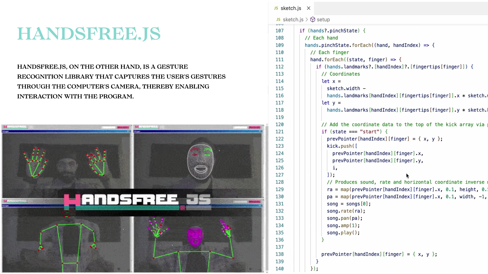
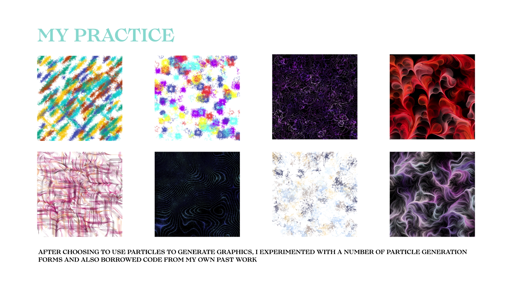
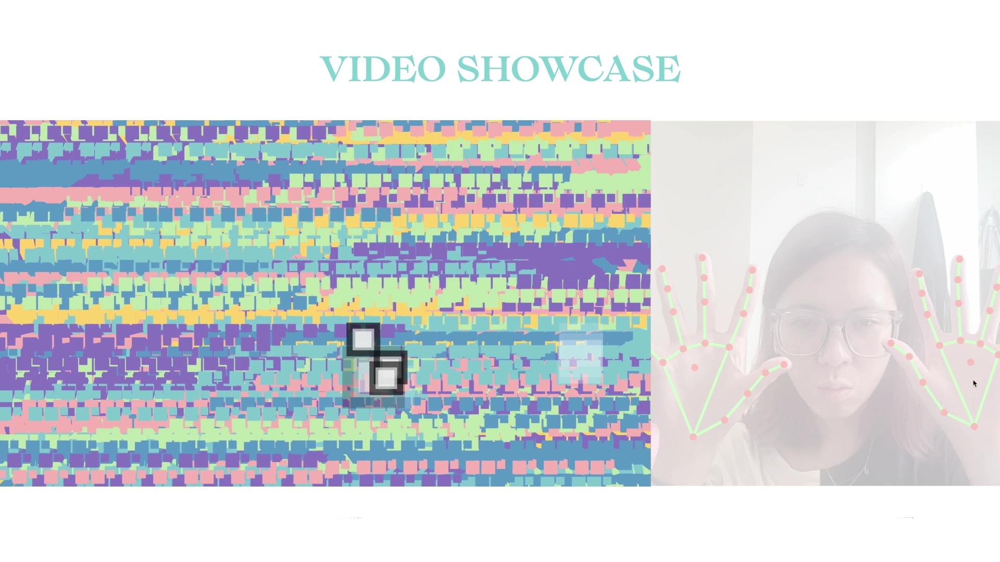

Sonata of the Fingertips
This interactive piece was developed using p5.js and Handsfree.js technology, which enables interaction through gesture recognition and music. By manipulating gestures on the screen, the program presents a cool clicking effect and particle animation on the canvas, and plays sound effects, providing participants with a full audio-visual experience.
Project Details / Background
The design of the work is inspired by music and art, and by combining musical and visual elements, a new interactive environment is created. By recognizing gestures, the program can sense the user's movements and display corresponding effects and animations on the screen. Simultaneously, the sound effects played change according to the different positions of the gestures, creating a unique musical experience.
The final product combines particle effects, music, and gesture recognition to offer users a unique audio-visual experience, showcasing the results of my second- semester studies.
Image Gallery

Handsfree.js

My practice

Video showcase